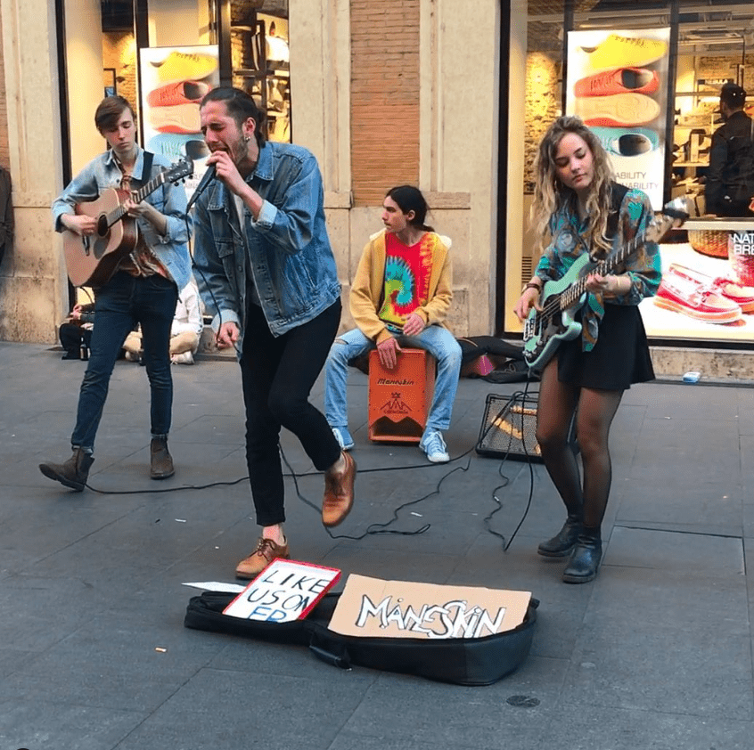

Historia de la Banda
FHistoria de un fenómeno global Måneskin (palabra danesa para "Luz de Luna") nació en las calles de Roma en 2016. La banda está integrada por Damiano David (voz), Victoria De Angelis (bajo), Thomas Raggi (guitarra) e Ethan Torchio (batería). Tras destacar en el programa X Factor Italia en 2017, alcanzaron el estrellato mundial al ganar el Festival de Eurovisión 2021 con su himno de rock "Zitti e Buoni". Su estilo fusiona el rock alternativo, el funk y el glam, devolviendo el sonido de las bandas clásicas a las listas de éxitos contemporáneas.
